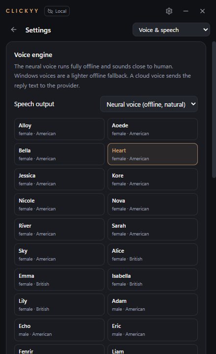
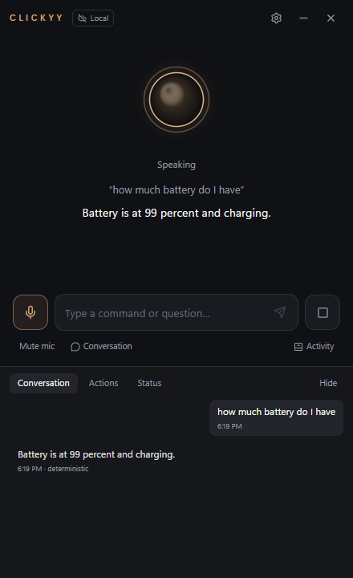
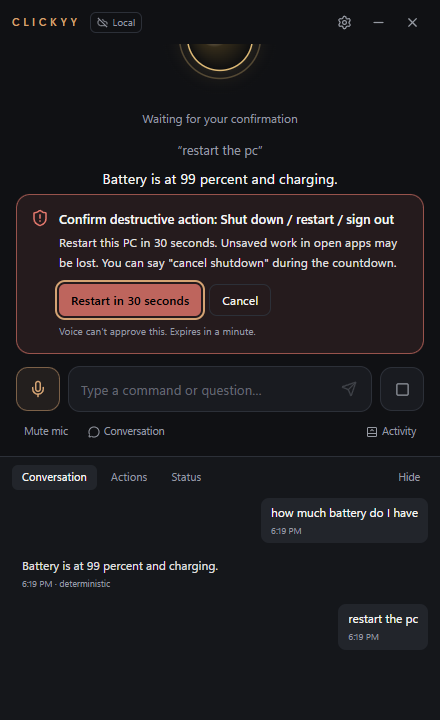

One voice. Every model.
Your whole desktop.
Pick the brain — Claude, Gemini, GPT, Grok, open models on Groq or hundreds more through OpenRouter — or stay 100% local with Ollama and LM Studio. Clickyy routes, falls back, and keeps going.
Wake words, offline
“Hey Clickyy”, “Clickyy” or “Jarvis”, detected on-device by Vosk. Audio never leaves your PC.
Any AI, with fallback
Primary + fallback cloud providers, then a local model. Live model lists, keys encrypted with Windows.
Runs your PC
Apps, windows, volume, media, battery, Wi-Fi, folders, web search — 48 typed tools, verified results.
Neural voice, offline
28 natural voices that run on your PC, American or British. Interrupt anytime just by talking.
Understands you
Whisper re-reads every command for near-perfect transcripts. Misheard app names are fuzzy-matched.
Briefings & alerts
Morning briefing, weather, system health report, and a heads-up when your battery runs low.
Sees your screen
Ask what's on your screen or summarize what you copied. Always confirmed, never stored.
Personality
Ten profiles, from Professional to Playful to a composed, dry-witted Butler.
Routines
Say “coding mode” to open your editor, project, set volume and start a focus timer — built visually.
Timers & memory
Reminders, focus sessions and things you ask it to remember — stored locally, editable, deletable.
Talk like a person.
Get things done.
Compound commands, follow-ups and context: “it”, “there”, “that window”. Simple commands answer in milliseconds without any model at all.
- Wake wordon-device
- Speech-to-textVosk, offline
- Router70 instant commands
- Any LLMsafe tool calling
- Voice replyoffline TTS
A calm, premium interface.
Near-black surfaces, champagne-gold accents and an orb that reacts to your real voice.



Powerful, never reckless.
No shell commands from AI, ever. Destructive actions need an on-screen click that names the exact action. Strict Offline mode blocks every remote request at the network layer.
Download Clickyy AI
One installer. Offline voice included. Add a model later — or never.
Windows says “Windows protected your PC”?
This early build isn't code-signed yet, so SmartScreen warns about new apps. Click More info → Run anyway. On PCs with Smart App Control enabled, unsigned apps can't run until the build is signed.